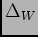

Figure (5.5.4) shows the variation of weather downtime fraction, the fraction of the potential obseerving hours per night lost to bad weather () averaged by month for the available data. June is the best month with less than 10% of potential observing time lost to weather. February is worst with 58% of potential observing time lost to weather.
|

|
|
[Weather downtime per night 2005.]
[Weather downtime per night 2006.]
[Weather downtime per night 2007.]
|
And the observing hours per night are displayed in figures 27(a) for 2005 , 27(b) for 2006 and27(c) for 2007 (part)..
|
[Observing hours per night 2005.]
[Observing hours per night 2006.]
[Observing hours per night 2007.]
|